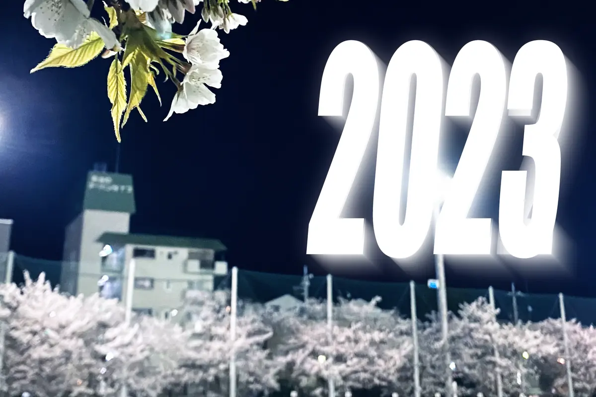
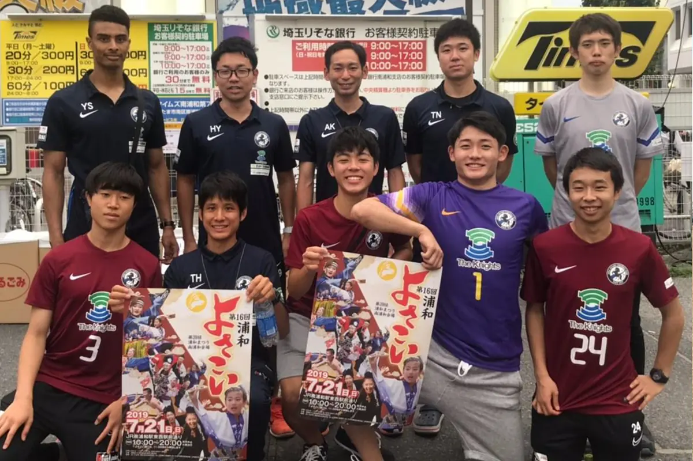

Our Story
クラブ理念
日本のスポーツ環境において『引退』という言葉は切り離せない。
多くの選手は、中学、高校の部活動の引退をもって今まで続けてきたスポーツから離れていきます。
けれど、果たして部活動の引退＝そのスポーツの引退としてよいのでしょうか。
こうした疑問から、大谷場地区出身の選手が引退することなく、競技性のある生涯スポーツとしてサッカーを続けられる環境を作りたいという想いのもと、Area大谷場を立ち上げました。
サッカーに対する情熱を持った人が、大谷場地区において多分野で活躍し、地域活性化につなげ、強固な地域コミュニティづくりに貢献すること。それがArea大谷場の使命です。

Mission
私たちが大切にしていること
01
地域スポーツ文化の基盤に
地域におけるスポーツ文化を培う基盤となり、地域活性化に貢献する。
02
大谷場のフラッグシップとして
大谷場地区のフラッグシップとして、地域に応援されるチームづくりを行う。
03
大谷場出身者で構成する
選手及びスタッフは大谷場地区出身者で構成し、強固な信頼関係のもとチーム運営を行う。
Emblem
クラブエンブレム

大谷場中学校学区内において象徴的なスポットである「浦和競馬場」からインスピレーションを受け、競走馬を基調としています。
また競走馬の背景には、区内を南北に流れる藤右衛門川、川の東西に位置する3つの小学校（大谷場小学校・大谷場東小学校・谷田小学校）を、かつてこの地域を彩ったナデシコの花に見立てて表現しています。
大谷場地区の発展と共に歩んできた所縁あるもの、場所への歴史と伝統を重んじ、また更なる発展とクラブの成功を祈念して、クラブ創設時スタッフで原案を作成しました。デザインは大谷場中学校OGのデザイナーによるものです。
Goal
クラブの目標
TARGET
2027年までに県1部リーグ昇格
TARGET
国体選手の輩出
Community
地域とともに

浦和まつり（南浦和会場）の運営お手伝い、スポンサー企業と連携したトレーニング講習や栄養講座など、ピッチの外でも大谷場地区とのつながりを育んできました。
クラブは地域の皆さま、そしてパートナー企業の皆さまのご支援によって支えられています。
Club Data
クラブ基本情報